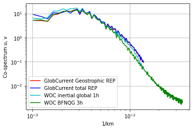
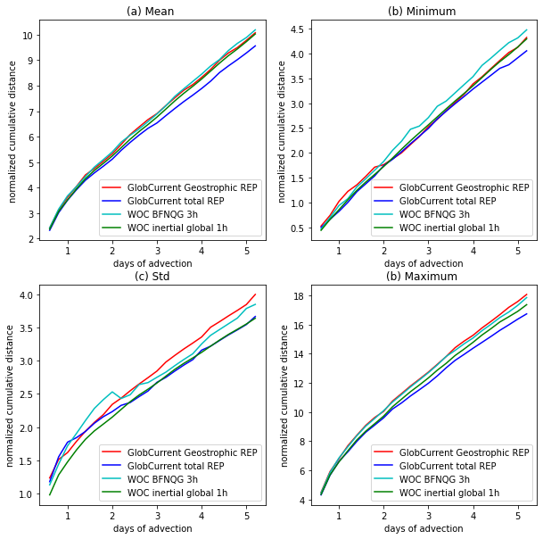

Product comparison#
Agulhas results
Compared products #
- GlobCurrent Geostrophic REP
- GlobCurrent Total REP
- WOC BFN-QG
- WOC inertial global
1. Spectrum #
At 0m

At 15m

2. Eulerian RMS #
At 0m
Mean error
| Mean | Eastward error | Northward error | Norm error | Direction error | Eastward speed | Northward speed | Field speed | Drifter speed | percentage |
| GlobCurrents Geostrophic | 0.185 | 0.175 | 0.181 | 84.718 | 0.328 | 0.318 | 0.467 | 0.543 | 38.514 |
| GlobCurrents Total | 0.166 | 0.169 | 0.166 | 77.047 | 0.362 | 0.325 | 0.495 | 0.554 | 34.434 |
| BFN-QG | 0.179 | 0.180 | 0.183 | 95.679 | 0.335 | 0.323 | 0.467 | 0.542 | 40.735 |
| Global Inertial | 0.182 | 0.179 | 0.181 | 86.787 | 0.338 | 0.315 | 0.470 | 0.545 | 38.014 |
Standard deviation error
| std | Eastward error | Northward error | Norm error | Direction error | Eastward speed | Northward speed | Field speed | Drifter speed | percentage |
| GlobCurrents Geostrophic | 0.117 | 0.112 | 0.118 | 64.674 | 0.326 | 0.317 | 0.290 | 0.298 | 0.212 |
| GlobCurrents Total | 0.109 | 0.110 | 0.110 | 60.797 | 0.355 | 0.325 | 0.288 | 0.299 | 0.192 |
| BFN-QG | 0.113 | 0.114 | 0.116 | 75.547 | 0.334 | 0.322 | 0.287 | 0.291 | 0.226 |
| Global Inertial | 0.117 | 0.116 | 0.119 | 67.338 | 0.334 | 0.315 | 0.278 | 0.291 | 0.208 |
At 15m
Mean error
| Mean | Eastward error | Northward error | Norm error | Direction error | Eastward speed | Northward speed | Field speed | Drifter speed | percentage |
| GlobCurrents Geostrophic | 0.195 | 0.193 | 0.205 | 81.975 | 0.426 | 0.382 | 0.585 | 0.674 | 35.201 |
| GlobCurrents Total | 0.198 | 0.195 | 0.209 | 80.823 | 0.432 | 0.389 | 0.595 | 0.679 | 34.423 |
| BFN-QG | 0.194 | 0.177 | 0.202 | 82.636 | 0.434 | 0.381 | 0.578 | 0.665 | 35.332 |
| Global Inertial | 0.217 | 0.220 | 0.225 | 86.463 | 0.445 | 0.396 | 0.607 | 0.684 | 36.111 |
Standard deviation error
| std | Eastward error | Northward error | Norm error | Direction error | Eastward speed | Northward speed | Field speed | Drifter speed | percentage |
| GlobCurrents Geostrophic | 0.139 | 0.135 | 0.145 | 65.958 | 0.425 | 0.373 | 0.360 | 0.423 | 0.195 |
| GlobCurrents Total | 0.143 | 0.138 | 0.152 | 65.558 | 0.432 | 0.385 | 0.364 | 0.428 | 0.193 |
| BFN-QG | 0.140 | 0.122 | 0.144 | 68.513 | 0.433 | 0.372 | 0.355 | 0.423 | 0.199 |
| Global Inertial | 0.152 | 0.150 | 0.157 | 69.502 | 0.445 | 0.392 | 0.353 | 0.428 | 0.200 |
3. Lagrangian Cumulative Distance (at 15m)#

4. Fronts and currents consistency#